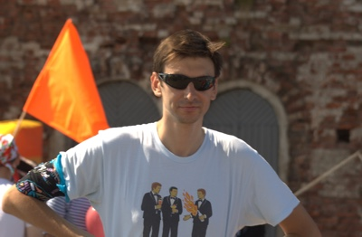
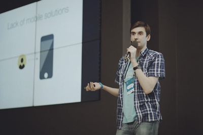

Welcome!
I'm Dmitriy Melnikov

Press → to navigate
This presentation looks best in Chrome
Current status
- Available for hire
- Interested in Android or Scala development
- Product management is possible alternative
- Living in Saint-Petersburg, Russia. Ready to move
Previously
Press ↓ for more details
Contributions
- Product management of API department
- Rebuilt Android app from scratch
- Took part in payment gateways development
Press ↓ to continue
Speaker

I like to organize and take part in professional events
Press ↓ for more details
Education
Master's degree in Computer Science
Press ↓ for more details
Ideal job
- Strong technical culture
- 50% telecommuting
- Innovation time off